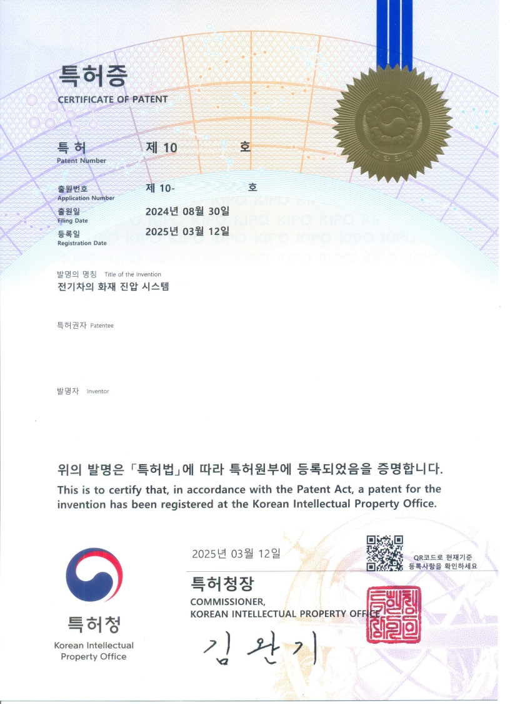

특허증 (1) - 배터리 열폭주 제어 장치

배터리 팩 내부의 특정 셀에서 이상 온도 및 압력 변화가 감지될 경우, 해당 셀에 직접 냉각제를 분사하여 열폭주를 원천적으로 차단하는 기술에 대한 특허입니다. 이 기술은 화재 발생을 예방하고 배터리 시스템의 안정성을 획기적으로 향상시킵니다.
- 특허 번호: 10-2024-XXXXXX
- 출원 일자: 2024.11.25
- 핵심 기술: 화염 및 유독가스 필터링 후 외부 배출
특허증 (2) - 지능형 배터리 관리 시스템

배터리의 전주기 데이터를 수집하고 AI 알고리즘을 통해 분석하여 잠재적인 위험 요소를 예측하는 시스템에 대한 특허입니다. 단순한 상태 모니터링을 넘어, 배터리의 수명과 성능을 최적화하고 예방적인 안전 조치를 가능하게 합니다.
- 특허 번호: 10-2024-YYYYYY
- 출원 일자: 2024.08.30
- 핵심 기술: 화재 확산 방지 구조, 자동 소화 장치
공인 인증 시험 성적서 - FILK

한국화학융합시험연구원(KTR)의 분원인 FILK(FITI시험연구원)에서 진행한 BFTC 시스템의 성능 테스트 결과입니다. 본 성적서는 열폭주 상황 모사 테스트에서 당사의 시스템이 99.8%의 효율로 온도를 제어하고 화재 전이를 완벽하게 차단했음을 공식적으로 증명합니다.
- 인증 기관: FILK (FITI시험연구원)
- 시험 항목: 배터리 열폭주 전이 차단 성능 테스트
- 시험 결과: 열 전이 차단율 100%, 최대온도 제어 성능 우수